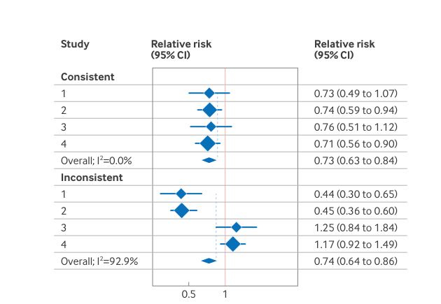
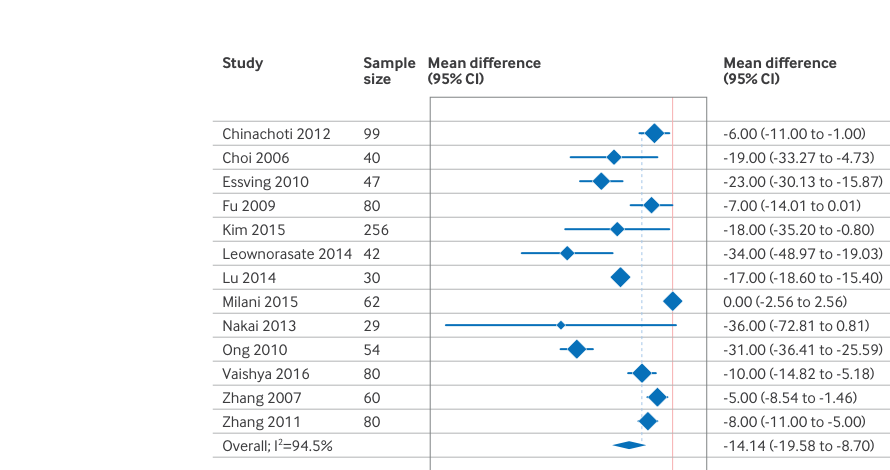

<div class="slide" data-slide-id="S54">

  <p style="margin:0 0 0.6vw 0; font-size: 0.82vw; text-transform: uppercase; letter-spacing: 0.08em; color: var(--muted); font-weight: 800;">
    Dom&iacute;nios do GRADE &bull; Core GRADE 3
  </p>

  <h2 style="margin: 0 0 1.25vw 0; font-weight: 800; color: var(--navy); font-size: 2.75vw; line-height: 1.12;">
    Inconsist&ecirc;ncia: quando rebaixar a certeza?
  </h2>

  <div style="display:flex; gap: 1.6vw; height: calc(100% - 7.2vw);">

    <div class="card" style="flex: 1.05; padding: 0; overflow: hidden; border-color: rgba(var(--navy-rgb),0.14); border-top: 0.35vw solid rgba(var(--navy-rgb),0.75);">
      <div class="cardHeader" style="display:flex; justify-content:space-between; align-items:center;">
        <span class="chip chip--navy">Checklist</span>
        <div style="font-size: 1.02vw; color: rgba(255,255,255,0.90);">o que olhar al&eacute;m do I&sup2;</div>
      </div>

      <div class="cardBody" style="padding: 1.15vw; color: var(--navy);">
        <ul style="margin: 0; padding-left: 1.2vw; display:flex; flex-direction:column; gap: 0.65vw; font-size: 1.08vw; line-height: 1.35;">
          <li><b>Dire&ccedil;&atilde;o</b>: estudos apontam para lados diferentes (benef&iacute;cio vs dano)?</li>
          <li><b>Magnitude</b>: todos mostram benef&iacute;cio, mas alguns s&atilde;o muito maiores/menores sem explica&ccedil;&atilde;o?</li>
          <li><b>Sobreposi&ccedil;&atilde;o de ICs</b>: ICs se sobrep&otilde;em bem ou parecem &ldquo;outliers&rdquo;?</li>
          <li><b>Explica&ccedil;&atilde;o plaus&iacute;vel</b>: diferen&ccedil;a de popula&ccedil;&atilde;o, dose, cointerven&ccedil;&otilde;es, baseline risk?</li>
          <li><b>An&aacute;lise de subgrupo</b>: foi pr&eacute;&#8209;especificada e faz sentido biol&oacute;gico/clinicamente?</li>
        </ul>

        <div style="margin-top: 0.95vw; padding: 0.9vw; border-radius: 0.9vw; background: rgba(var(--gold-rgb),0.10); border: 1px solid rgba(var(--gold-rgb),0.22);">
          <div style="font-size: 1.06vw; line-height: 1.35;">
            Lembrete: <b>heterogeneidade</b> &eacute; dom&iacute;nio de <b>inconsist&ecirc;ncia</b> &mdash; n&atilde;o &eacute; &ldquo;imprecis&atilde;o&rdquo; (que &eacute; sobre <b>IC</b> e informa&ccedil;&atilde;o/ eventos).
          </div>
        </div>
      </div>
    </div>

    <div class="card" style="flex: 0.95; padding: 0; overflow: hidden; border-color: rgba(var(--gold-rgb),0.26); border-top: 0.35vw solid rgba(var(--gold-rgb),0.78);">
      <div class="cardHeader" style="display:flex; justify-content:space-between; align-items:center;">
        <span class="chip chip--gold">Visual r&aacute;pido</span>
        <div style="font-size: 1.02vw; color: rgba(255,255,255,0.90);">um &ldquo;outlier&rdquo; muda a confian&ccedil;a?</div>
      </div>

      <div class="cardBody" style="padding: 1.15vw;">
        <div style="display:flex; flex-direction:column; gap: 0.85vw;">

          <div style="border: 1px solid var(--border); border-radius: 1vw; overflow: hidden; background: #fff; padding: 0.55vw;">
            
          </div>
          <div style="font-size: 1.02vw; line-height: 1.35; color: var(--navy);">
            <b>Figura 3:</b> quando a dire&ccedil;&atilde;o/magnitude mudam entre estudos, isso sugere <b>inconsist&ecirc;ncia</b>.
          </div>

          <div style="border: 1px solid var(--border); border-radius: 1vw; overflow: hidden; background: #fff; padding: 0.55vw;">
            
          </div>
          <div style="font-size: 1.02vw; line-height: 1.35; color: var(--navy);">
            <b>Figura 4:</b> I&sup2; alto pode coexistir com dire&ccedil;&atilde;o semelhante; a leitura come&ccedil;a no <b>forest plot</b>, n&atilde;o no n&uacute;mero.
          </div>

        </div>
      </div>
    </div>

  </div>

  <div class="ref" style="margin-top:auto; padding-top: 0.9vw; border-top: 1px solid var(--border); left:6%; right:6%; font-size: 0.86vw; color: var(--muted);">
    Fonte: Core GRADE 3 (inconsist&ecirc;ncia) &mdash; BMJ 2024. DOI: 10.1136/bmj-2024-081905.
  </div>

</div>
